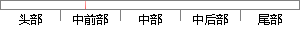

第一章，介绍了声纹识别的研究背景与意义，阐述了声纹识别的发展历史与现状，介绍了声纹识别的基本原理和本课题的实验流程，常用的特征参数、模式匹配的方法。
片段位置图

相似结果|
相似片段 1：第一章 绪论。简要阐述了课题的研究背景，介绍了声纹识别的概念以及声纹识别技术的发展、研究现状和应用领域，指出了目前声纹识别技术研究存在的几个重要的难题。第二章 声纹识别的基本原理。从人类的发声和听觉
|
※ 片段修改建议 ※
近似词参考：- 介绍：先容
- 别的：此外 另外 其它 其余
- 研究：钻研
- 背景：布景 后台 靠山 配景
- 阐述：论述
- 别的：此外 另外 其它 其余
- 发展：成长 生长
- 历史：汗青
- 现状：近况
- 介绍：先容
- 别的：此外 另外 其它 其余
- 实验：尝试 实行 试验
- 常用：经常使用
- 匹配：立室
- 方法：方式 要领 法子
系统自动生成语句：第一章，先容了声纹识此外钻研布景与意义，论述了声纹识此外成长汗青与近况，先容了声纹识此外基本原理和本课题的尝试流程，经常使用的特征参数、模式立室的方式。
注：本片段修改建议为系统自动生成，仅供参考。